VORTEX: Tangible Ceramic Music Interface
VORTEX: Tangible Ceramic Music Interface
Yun WANG1,2 , Runfu LIU1, Yuqing LIANG3, Calvin CHANG1
Tsinghua University 2. Beihang University 3. Parsons the School of Design
1. PubPub Link
https://nime.pubpub.org/pub/gqm8mbs6/draft?access=2uad0ert
2. ABSTRACT
When listening to a piece of music, people often associate different textures of sound with tactile sensations like smoothness, granularity or warmth etc. These subjective assessments are related to common synesthesia and the physical auditory experience. However, since audiences without professional music training passively activate limited sensory channels while listening to music, they have difficulties understanding the relationship between the textures of sound and the techniques of the musician. This could be a potential research direction for future immersive music performance and experience.
VORTEX is a tangible music interface, mainly composed of a series of ceramic modules, capacitive touch sensors, temperature sensors, a baseboard, a main control board, a headphone and a supporting structure (see Figure.1). It is designed to interact with a wellknown musical composition played by Chinese Guzheng, a 21 or 25-stringed plucked instrument that generates rhythm with rich granular sensation. VORTEX involves multiple senses such as hearing, touch, and proprioception. It invites users to experience multimodal perception and synchronization with the music.

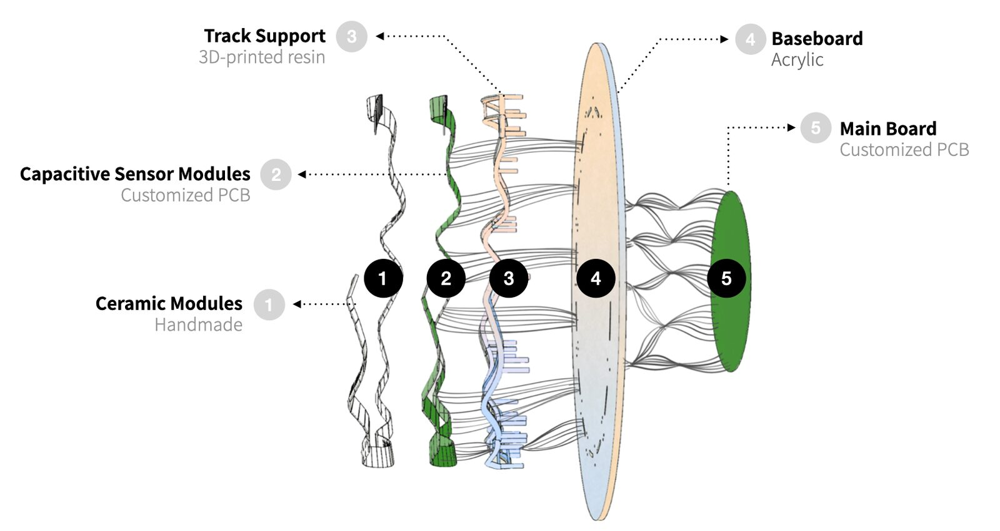
Figure.1 Five layers of the Interface Structure
Users interact with VORTEX though an annular ceramic bands that function both as a materialized progress bar and a carrier of various tactile information. The ceramic band is assembled by modular components and corresponds to an individual audio track. Each ceramic modular links with a single note, implementing couplings between tactile signals (size, surface texture, position change and temperature) and music elements (note, chord fingering, musical scale and intensity) to provide users a tangible experience while listening to music (see Figure.2). Ceramic is chosen as the main touching material due to its extensive range of textural expressions, performance of conduction and cultural semantic association to the Chinese Guzheng (see Figure.3).

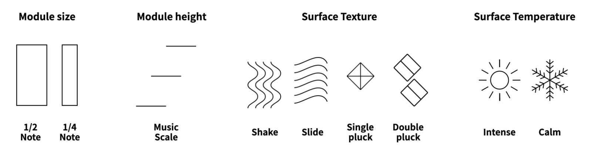
Tactile signal | Music element | Mapping principle |
Size | Note | The main track is divided into around 96 modules that have two sizes, corresponding to 1/4 note and 1/2 note. |
Height | Musical scale | The music scale is classified into 3 levels. The higher the pitch, the further the modules are placed from the base. |
Surface texture | Chord fingering | On the main track, a total number of 8 texture patterns represent variations of 4 chord fingering techniques. |
Surface Temperature | Intensity | The temperature of the modules represents the intensity of the music. The more intense the performance is, the warmer the module is. |
Figure.2 Couplings

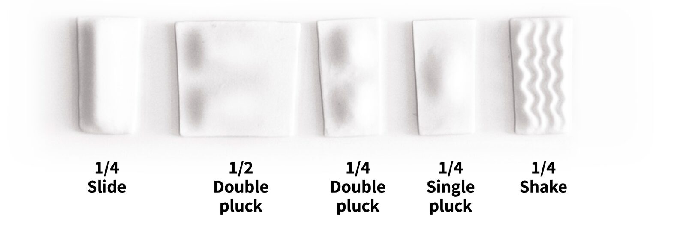
Figure.3 Examples of Ceramic Modules
To trigger the interaction, users need to keep physical contact with the ceramic bands. As the finger tips are highly sensitive to textile and temperature, it is best suited to be engaged in this process. While touching the band, users will hear the corresponding music playing from the headphone. If they move their arms and hands too quickly, too slow or too discontinuously, they will immediately get the audio feedback so that they can choose to slightly adjust their movement to match the correct flow of the music. Users are also able to create random encounters of ceramic modules that are not adjoining, and generate different sounds.
The combination of tactile information adds a new sensory track to the music, enriching the auditory experience (see Figure.4). It materializes the subtle changes of musical elements as well as the finger movements of the musician. Multiple sensory channels, as well as the whole upper body of users are motivated to participate in the exploration of sound and texture.

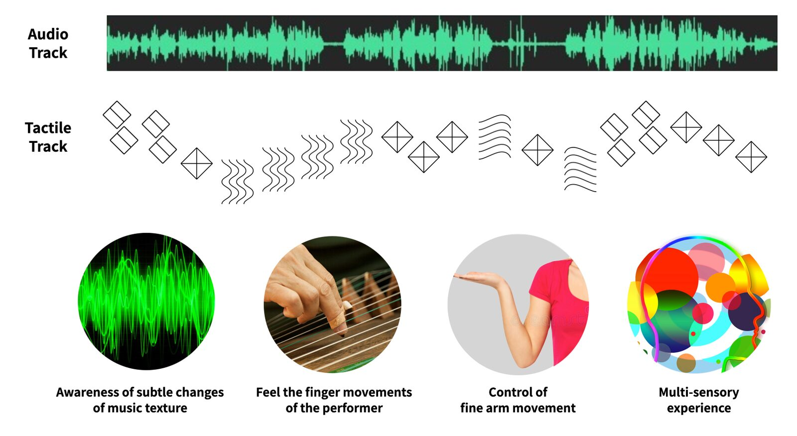
Figure.4 Multi-Sensory User Experiences
Further experiments include developing the ceramic modular system and possibilities of composing different musical pieces and new interaction patterns.
3.Program Notes
VORTEX is a tangible music interface, mainly composed of a series of ceramic modules, capacitive touch sensors, temperature sensors, a baseboard, a main control board, a headphone and a supporting structure. It is designed to interact with a wellknow musical composition played by Chinese Guzheng, a 21 or 25-stringed plucked instrument that generates rhythm with rich granular sensation. VORTEX involves multiple senses such as hearing, touch, and proprioception. It invites users to experience multimodal perception and synchronization with the music.
4.Requirements
- equipment:
A 1.5m x 2.5m wall that can bear at least 15kg
Two spotlights on the top of the wall
220 volt electrical outlets
No network or wifi connections needed
- space: A 1.5m x 2.5m wall with no obstruction within 1.5 meter in front, this will be used as an experience space for participant to interact with the installation.
- performer(s): no performer needed
- feasibility: This work is supported by the Future Laboratory of Tsinghua University, Beijing, China. Our team will attend the forum in person and bring the whole installation to Shanghai, adjust and maintain it on site.
4. Media
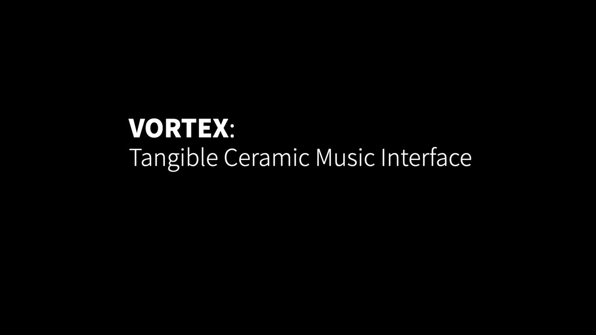
▶
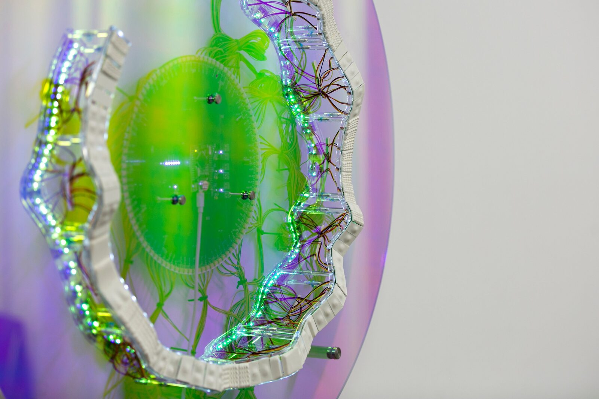

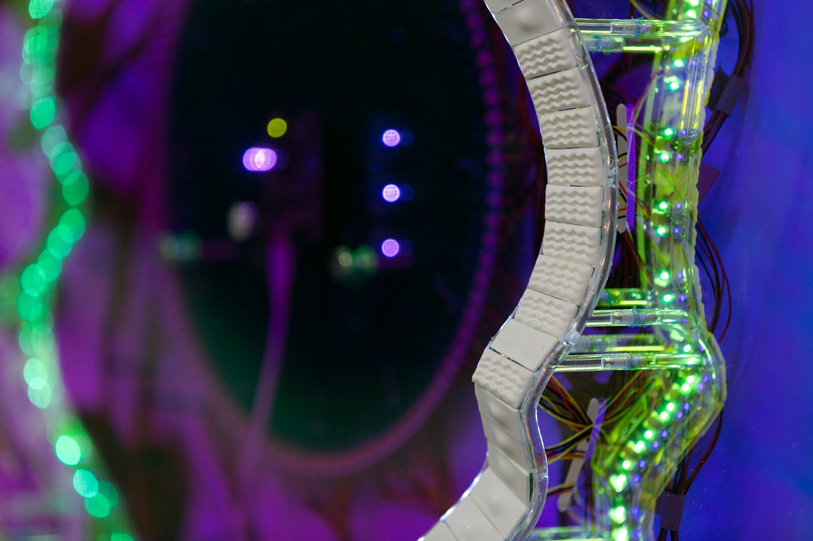

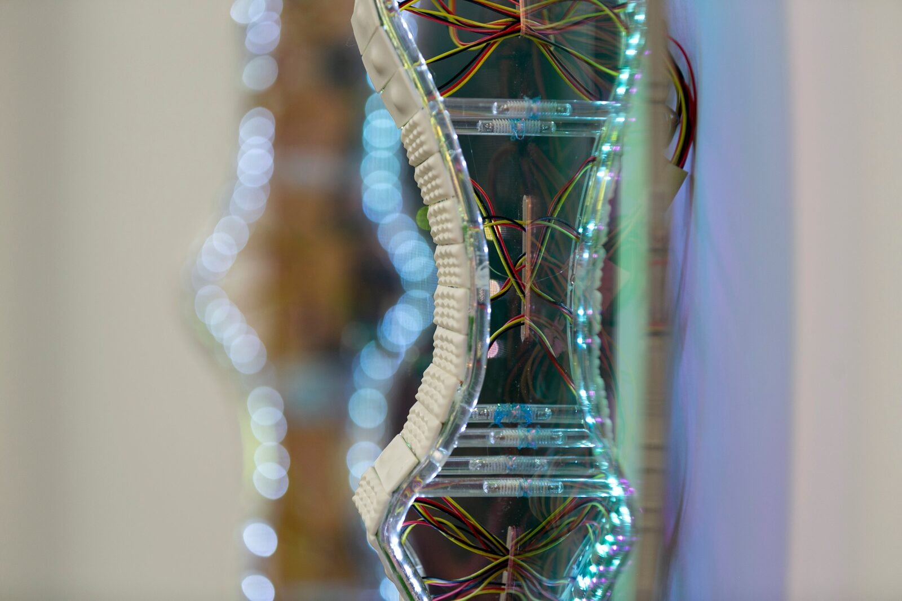

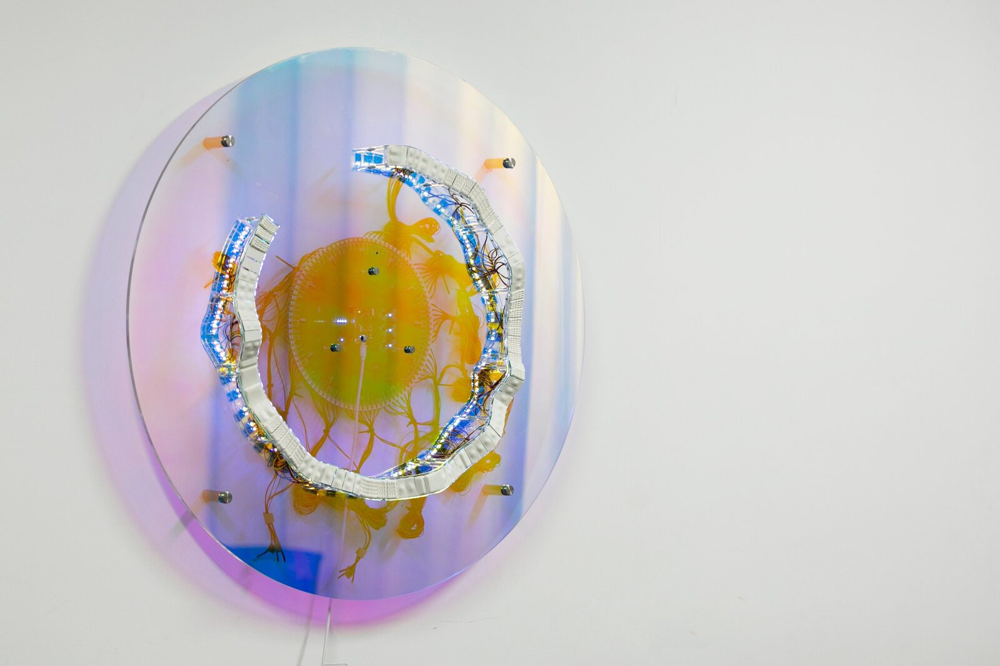

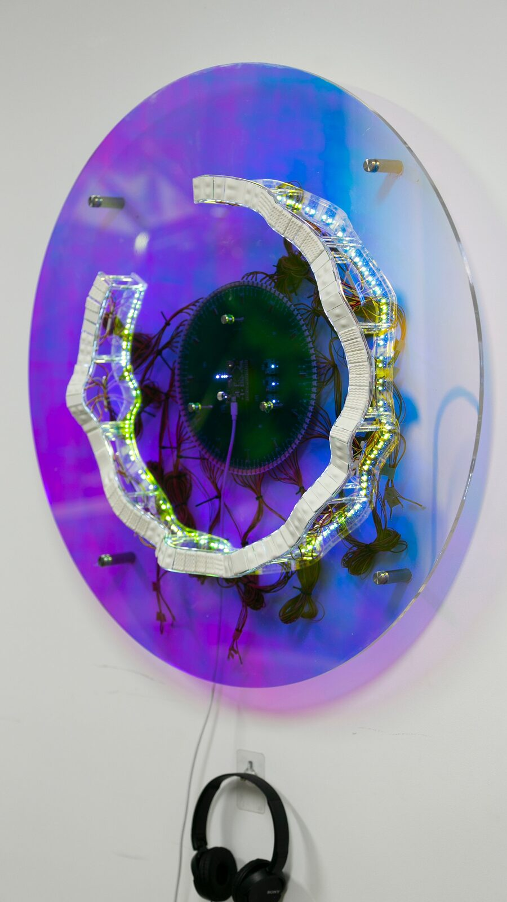

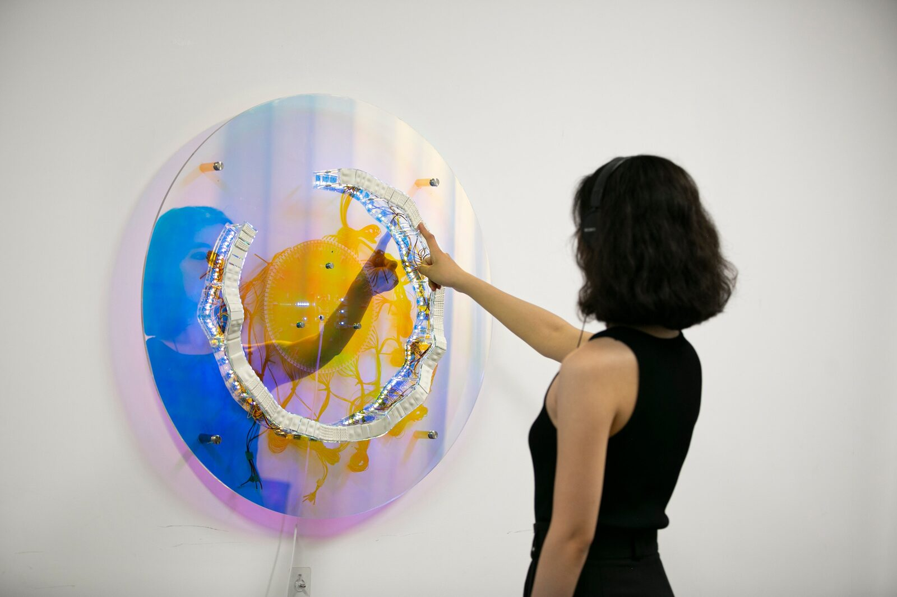

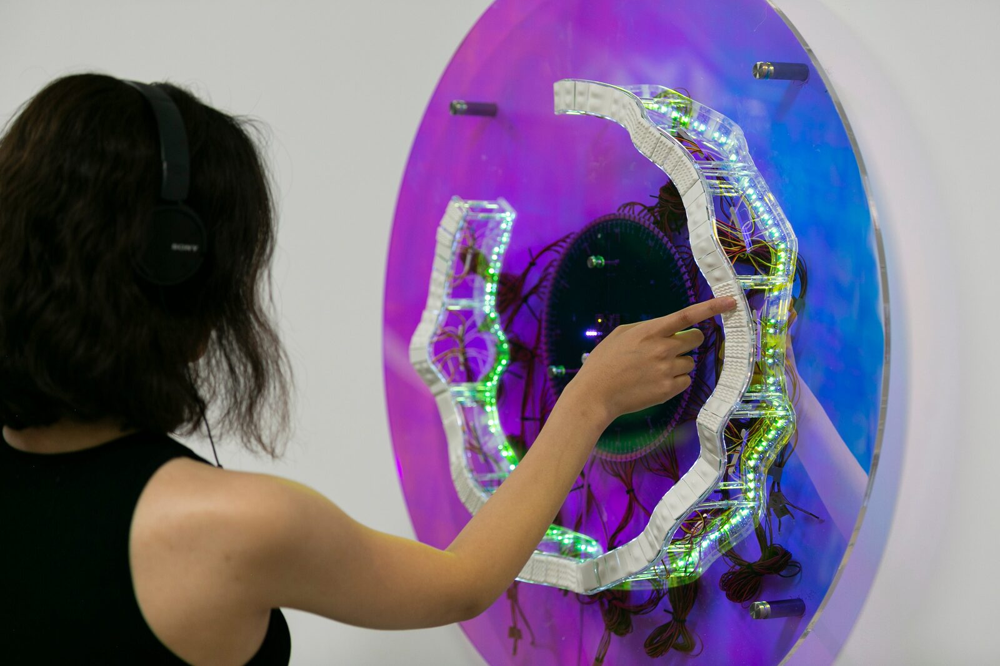
5. ACKNOWLEDGEMENTS
The authors would like to thank Qing Miu and Tianyu Yu for Guzheng performance and remix, and the contemporary ceramic artist Mr. Xianzhong Su for the casting and wood firing of the ceramic modules. We appreciate greatly the enlightening discussions with professor Xu Yingqing and professor Li Zijin. This work is supported by the Future Laboratory of Tsinghua University, Beijing, China.